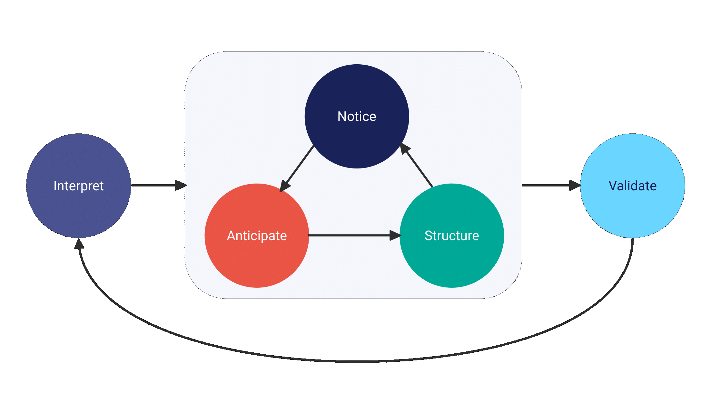

bidux 0.3.1: Modern Telemetry Integration in the BID Framework
The {bidux} 0.3.1 release makes telemetry analysis in BID smoother, tidier, and more consistent; from raw issues to validated insights.
Software Development
User Experience
Published
September 8, 2025
I’m excited to announce that bidux 0.3.1 is now available on CRAN. This release brings telemetry deeper into the Behavioral Insight Design (BID) framework, strengthens stage consistency, and smooths the migration path for users moving from earlier versions.
A Modern Telemetry Workflow
Telemetry data is increasingly central to BID workflows. Until now, telemetry ingestion produced list-like objects that worked but weren’t always convenient for analysis.
In 0.3.1, bid_ingest_telemetry() now returns hybrid telemetry objects: they behave like lists for backward compatibility, while adding new methods such as as_tibble() and bid_flags().
For new projects, the preferred interface is the tidy-friendly bid_telemetry(), which returns structured tibbles (bid_issues_tbl) ready for dplyr pipelines:
This release also introduces bridge functions that connect telemetry issues directly to BID stages:
bid_notice_issue(): convert one issue into a Notice stage
bid_notices(): batch process multiple issues
bid_address(): quickly act on a set of issues
bid_pipeline(): process the first N issues with limits
These functions make it easier to move from raw telemetry data to structured BID insights without extra glue code.
A Quick Example
Here’s what a telemetry-informed BID pipeline can look like in 0.3.1:
Code
library(bidux)library(dplyr)# Ingest telemetry as tidy issuesissues <-bid_telemetry("telemetry.sqlite")# Focus on the most severe issuescritical <- issues |>filter(severity =="critical")# Turn those into BID noticesnotices <-bid_notices(critical)# Move forward through the pipelinestructure <-bid_structure(notices, telemetry_flags =bid_flags(critical))validate <-bid_validate(structure, telemetry_refs = critical)
This pipeline takes real user behavior (via telemetry), surfaces critical issues, and carries them through to structured design recommendations and validation, all with tidy, pipeline-friendly functions.
Framework Stability and Improvements
Alongside telemetry, this release improves framework stability and consistency:
Stage order correction:
BID stages now follow the canonical sequence: Interpret → Notice → Anticipate → Structure → Validate
Migration support is built in, so older outputs remain interpretable

Behavioral Insight Design (BID) framework diagram showing five sequential stages: Interpret User Needs, Notice the Problem, Anticipate User Behavior, Structure the App, and Validate and Empower the User
Unified suggestion system:
Interpret, Notice, and Validate now share consistent rules, reducing duplication and simplifying outputs
Structure and validation refinements:
bid_structure() can adjust recommendations using telemetry flags (e.g., avoid tabs if navigation drop-offs are detected)
bid_validate() can link validation results back to the telemetry issues that motivated them
Migration and Deprecations
Existing telemetry code continues to work, but now has access to the enhanced features. Looking ahead to 0.4.0:
bid_ingest_telemetry() will be soft-deprecated in favor of bid_telemetry().
Layout auto-selection in bid_structure() and layout-specific bias mitigations in bid_anticipate() will be removed in favor of concept-driven approaches.
Documentation and Tests
We’ve updated the Getting Started vignette with new telemetry examples and corrected stage numbering, and expanded the Telemetry Integration vignette to show the new tidy workflow. Test coverage has been broadened across new methods, bridge functions, and migration utilities.
Install the Latest Release
You can install bidux 0.3.1 from CRAN today:
Code
install.packages("bidux")
This release makes working with telemetry in BID smoother, tidier, and more consistent. It strengthens the framework while keeping migration straightforward, so you can spend less time adapting code and more time focusing on insights.
Citation
BibTeX citation:
@online{2025,
author = {},
title = {Bidux 0.3.1: {Modern} {Telemetry} {Integration} in the {BID}
{Framework}},
date = {2025-09-08},
url = {https://www.jrwinget.com/blog/2025-09-08-modern-telemetry/},
langid = {en}
}